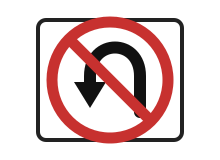
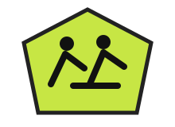

Who rides with a Texas learner The licensed supervising adult must be at least 21 and sit in the front passenger seat. (Chapter 1: Your License to Drive)
No phone use on a learner license Learner license holders cannot use a phone while driving, including hands-free calls, except in an emergency. (Chapter 1: Your License to Drive)
Buses on separate roadways If the opposite side is separated by a physical barrier or intervening space, the opposite-direction driver does not have to stop. Painted lines or a shared left-turn lane do not make two separate roadways. (Chapter 4: Right-of-Way)
Signal before the corner Texas requires the turn signal continuously for at least the last 100 feet before turning. (Chapter 6: Signaling, Passing, and Turning)
No left-side pass near crossings Do not drive left of center to pass within 100 feet of an intersection or railroad crossing. (Chapter 6: Signaling, Passing, and Turning)
Practice Texas rules
Say what you would do before opening the answer. If you miss a scenario, review the named section in the handbook before trying the second example.
1. Your licensed 19-year-old cousin offers to supervise you. Can you drive with only them?
Answer: No. Find a licensed adult who is at least 21.
The licensed supervising adult must be at least 21 and sit in the front passenger seat.
Manual: Chapter 1: Your License to Drive
2. Your eligible supervisor sits in the back while a friend sits in front. What needs to change?
Answer: Move the supervising driver to the front passenger seat.
The licensed supervising adult must be at least 21 and sit in the front passenger seat.
Manual: Chapter 1: Your License to Drive
3. You want to confirm dinner plans using the car's hands-free system while you drive. Is that allowed?
Answer: No. Wait until you are safely stopped.
Learner license holders cannot use a phone while driving, including hands-free calls, except in an emergency.
Manual: Chapter 1: Your License to Drive
4. A friend says the learner phone restriction only applies if you touch the screen. Is that right?
Answer: No. Ordinary hands-free use is also restricted.
Learner license holders cannot use a phone while driving, including hands-free calls, except in an emergency.
Manual: Chapter 1: Your License to Drive
5. A bus across a painted center turn lane flashes red. Does the painted lane let you continue?
Answer: No. Stop.
If the opposite side is separated by a physical barrier or intervening space, the opposite-direction driver does not have to stop. Painted lines or a shared left-turn lane do not make two separate roadways.
Manual: Chapter 4: Right-of-Way
6. The bus is across a physical median on a separate roadway. You are going the other direction. Does the Texas bus stop rule require a stop?
Answer: Not on that separate roadway; stay alert for people crossing.
If the opposite side is separated by a physical barrier or intervening space, the opposite-direction driver does not have to stop. Painted lines or a shared left-turn lane do not make two separate roadways.
Manual: Chapter 4: Right-of-Way
7. You start your signal only when the front tires reach the corner. What was missed?
Answer: The advance signal before the turn.
Texas requires the turn signal continuously for at least the last 100 feet before turning.
Manual: Chapter 6: Signaling, Passing, and Turning
8. The right lane bends; your signal has been on for 50 feet and you are about to turn into a side street. Is that enough?
Answer: No. Signal for at least the last 100 feet.
Texas requires the turn signal continuously for at least the last 100 feet before turning.
Manual: Chapter 6: Signaling, Passing, and Turning
9. A slow truck is 70 feet before a crossing and the opposing lane is empty. Can you pass left of center?
Answer: No. Wait until you are out of the restricted area and passing is safe.
Do not drive left of center to pass within 100 feet of an intersection or railroad crossing.
Manual: Chapter 6: Signaling, Passing, and Turning
10. You approach an intersection 80 feet away behind a slow car. Does a gap in oncoming traffic make a left-side pass legal there?
Answer: No. The intersection distance still applies.
Do not drive left of center to pass within 100 feet of an intersection or railroad crossing.
Manual: Chapter 6: Signaling, Passing, and Turning
Road sign self-check
Cue
First read
Red octagon
Stop and check the intersection.
Yellow diamond
Look for the warning and prepare for the condition.
11. For Texas practice, this sign tells drivers that:
Answer: Traffic may not enter from this direction
A Do Not Enter sign means the lane or road is closed to traffic from your direction. This page uses original artwork; verify final rules in the Texas Driver Handbook.
Manual: Chapter 5: Signals, Signs, and Markers
12. What is the safest meaning of this sign?
Answer: You are traveling against permitted traffic
Wrong Way warns that you are entering or driving against traffic and should safely stop and turn around. This page uses original artwork; verify final rules in the Texas Driver Handbook.
Manual: Chapter 5: Signals, Signs, and Markers

13. What action is prohibited by this sign?
Answer: A U-turn
A No U-turn sign means drivers may not reverse direction at that location. This page uses original artwork; verify final rules in the Texas Driver Handbook.
Manual: Chapter 5: Signals, Signs, and Markers
14. For Texas practice, this sign indicates:
Answer: Traffic travels only in the arrow direction
One Way signs show the permitted direction of traffic on that road or lane. This page uses original artwork; verify final rules in the Texas Driver Handbook.
Manual: Chapter 5: Signals, Signs, and Markers
15. What does this sign set?
Answer: A posted maximum speed under normal conditions
Speed limit signs show the posted maximum speed under normal conditions unless conditions require slower driving. This page uses original artwork; verify final rules in the Texas Driver Handbook.
Manual: Chapter 5: Signals, Signs, and Markers

16. What should you expect near this sign?
Answer: Children may be crossing nearby
School crossing signs warn drivers to slow down and watch for children. This page uses original artwork; verify final rules in the Texas Driver Handbook.
Manual: Chapter 5: Signals, Signs, and Markers
17. For Texas practice, this sign warns drivers to watch for:
Answer: People crossing the roadway
Pedestrian crossing signs tell drivers to look carefully and be ready to yield. This page uses original artwork; verify final rules in the Texas Driver Handbook.
Manual: Chapter 5: Signals, Signs, and Markers
18. What road situation does this sign warn about?
Answer: Traffic streams will join together
Merge signs warn that vehicles from another lane or ramp will join your lane. This page uses original artwork; verify final rules in the Texas Driver Handbook.
Manual: Chapter 5: Signals, Signs, and Markers
19. This sign means:
Answer: A lane will end or narrow ahead
Lane Ends signs warn you to prepare for a lane reduction and merge safely. This page uses original artwork; verify final rules in the Texas Driver Handbook.
Manual: Chapter 5: Signals, Signs, and Markers
20. For Texas practice, what hazard does this sign warn about?
Answer: Slippery road surface when wet
Slippery road signs warn that traction may be reduced, especially when wet. This page uses original artwork; verify final rules in the Texas Driver Handbook.
Two original drawings of temporary traffic-control devices. Read the stripe direction from the driver's view. These cases do not count toward the 20-question sign score.
A wide barricade like A blocks part of your lane. You can see an open lane on the right. Which side does A direct you toward?
Right. Follow a stripe from its higher end to its lower end: A descends toward your right. Slow down, check traffic, and move to the open lane only when safe. The stripes show the intended side, not permission to cut into another lane.
At the next work zone you see a narrow upright panel like B. Does its shape change how you read the stripes?
No. The slope works the same on a vertical panel. B descends toward your left, so the panel directs traffic to the left. Do not assume every orange-and-white device sends you right.
You can see the intended route around a barricade, but a flagger holds up a STOP paddle. What do you do?
Stop in your lane and wait for the flagger to direct you forward. Do not go around the device just because the intended path looks open.